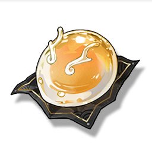

Crystal Clear Buns
Supplies

Increases the defense of all Resonators in the team by 20% for 30 minutes, only effective for the player's Character in multiplayer games.
Sanhua replaced some of the original materials in the production of Loong Buns, making it a refreshing, cool, and transparent dessert for the summer. During the hot summer, this dessert can always be seen on the table in the Dragon's residence, and it is loved by all the visitors... and the Jinzhou Magistrate.